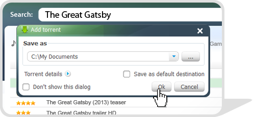

-
Den Namen in der Suchzeile angeben
-

Die aus den gefundenen Varianten notwendige Datei auswählen
-
Den Knopf «Download» klicken und den Downloadweg auswählen
-

Nach dem Ladevorgangende die Datei öffnen
-

Ein paar Minuten warten und beginnen den Film online anzuschauen
-

1
Das Programm enthält Suchzeile, mit Hilfe deren Sie jede interessierende Datei auf Namen finden können. Video anschauen -

2
Wählen Sie aus erhaltenen Varianten die notwendige Datei und klicken Sie auf den Knopf Download. Je mehr Sterne links, desto größer die Downloadgeschwindigkeit.
Für die ausführlichere Suche kann man den erweiterten Filter benutzen. Video anschauen -

3
Ein Dialogfeld tritt auf, wo man Ihnen den Weg des Dateihaltens vorgeschlagen wird. Man kann diesen Weg als standartmässig speichern.
Beim Klicken auf «Details des Torrents» können Sie Dateien zum Download wählen. Video anschauen -
4
Um die Downloade Datei zu öffnen, drücken Sie darauf mit Rechtsklick und wählen Sie das Tab «Ordner öffnen». -

5
Die gewählte Datei kann man sich online mit Inlinemediaplayer anschauen oder anhören, ohne auf das Ende des Ladevorgangs zu warten. Video anschauen -
6
Wenn heruntergeladene Filme, Lieder, programme oder Spiele Ihnen gefallen, können Sie die heruntergeladene Datei an Ihre Freune weiterleiten. Dazu ziehen Sie einfach die Datei ins Fenster in der linken Ecke. Video anschauen